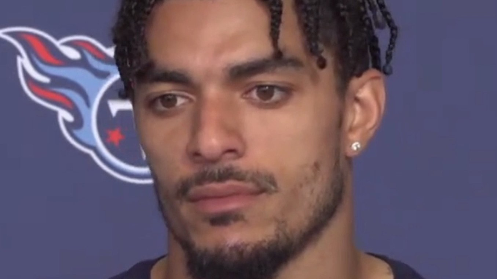

Bills trade for Titans safety Amani Hooker, the NFL's interception leader
Buffalo traded a 2027 second-round pick to Tennessee for safety Amani Hooker and a 2027 fifth-rounder, per ESPN's Adam Schefter. Hooker's five interceptions are tied for the NFL lead — three came against Joe Burrow on Nov. 1 — and he fills the hole left by C.J. Gardner-Johnson's release.

Brandon Beane did it again. Hours before Tuesday's 4 PM ET trade deadline, Buffalo acquired Tennessee Titans safety Amani Hooker — the NFL's co-leader in interceptions — in exchange for a 2027 second-round draft pick, with a 2027 fifth-round pick also coming back to Buffalo, per ESPN's Adam Schefter and the Democrat and Chronicle's deadline coverage. Hooker, 28, has five interceptions this season, tied for the league lead, and three of them came in one afternoon against Joe Burrow and the Cincinnati Bengals on Nov. 1, per the same reporting. An eight-year veteran who spent his entire career in Tennessee, Hooker is signed through the 2028 season on the three-year, $40.5 million extension he signed in September 2025, per the Democrat and Chronicle — and per USA Today's trade grades, the deal carries no guaranteed money remaining, which gives Buffalo flexibility if the fit is not perfect.
The need was obvious, and it was urgent. Buffalo released starting safety C.J. Gardner-Johnson on Nov. 3, one week after he served a one-game suspension, and the position has been patched together ever since. Damar Hamlin stepped in next to third-year strong safety Cole Bishop, but per USA Today's grades breakdown, Hamlin has allowed a 111.3 passer rating as the nearest defender this season. Bishop is the future at one spot. The other spot needed a veteran who could walk in and start on a defense with Super Bowl ambitions — and Hooker is exactly that profile: a ball-hawking free safety in the middle of the best season of his career, joining a Jim Leonhard defense that just held Minnesota to 178 total yards and forced three more turnovers on Monday night.
Hooker was not Buffalo's first call, and that part matters for how you grade the price. Per azcentral's deadline coverage, the Bills pushed for Arizona Cardinals star Budda Baker first and were rebuffed — Arizona would not move its franchise icon. Buffalo had also been linked to Baker all week, per ESPN's Jeremy Fowler, who reported Baker might have welcomed a shot at a contender. When Arizona said no, Beane pivoted to Hooker: two years younger than Baker, per azcentral, with an extra year of team control. The price is real — a second-round pick is the same currency Buffalo spent on DJ Moore in the offseason — and the skepticism is fair, too. USA Today graded the deal a B-minus for Buffalo and an A for Tennessee, noting Hooker recorded no interceptions last season and allowed a 140.5 passer rating as the nearest defender. This is a bet on the 2026 version of Amani Hooker being the real one.
The cap math is tight but workable. Buffalo entered deadline day with roughly $3.8 million in available cap space, per Spotrac figures cited by the Democrat and Chronicle, and Hooker's remaining 2026 money fits inside a structure with no guarantees beyond this season. What Buffalo is really buying is January insurance. This defense just posted a five-part stat line no team had matched in consecutive games since the 1985 Bears — but it did it against a backup quarterback in Minnesota and a Baltimore team that lost Lamar Jackson mid-game. The offenses waiting in the playoffs will test the middle of the field in ways Carson Wentz could not. A safety with five interceptions in eight games changes how quarterbacks attack the deep middle, and it changes what Leonhard can call behind him.
The debut could come fast: Buffalo is at the New York Jets on Sunday, Nov. 15 at 1 PM ET, and a veteran safety with eight years in the league is the one deadline addition who can realistically start on five days of prep. Christian Benford's wrist — he left Monday night's game for good in the third quarter — remains the secondary's other open question, with the first Jets-week practice report due Wednesday. But the headline of deadline day is settled: at 7-1, tied for the NFL's best record and winners of four straight, the Bills did not stand pat. They went and got the league's interception leader for their weakest spot. That is what all-in looks like. Go Bills — and get the full Jets-week breakdown in your inbox every morning with The BNC Blitz.